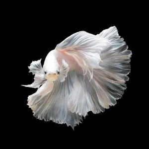
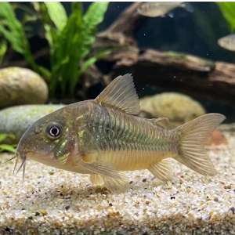
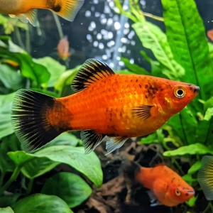
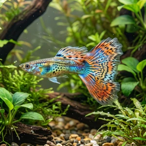

Aprenda o básico antes de comprar
Leia os guias essenciais para evitar decisões apressadas em filtragem, ciclagem e fauna.
Ler sobre ciclo do nitrogênioGuias, fichas de peixes e ferramentas para cuidar melhor do seu aquário.
Visão geral
O AquaristaPro está em constante desenvolvimento! Estamos trabalhando continuamente para trazer novas fichas técnicas, guias práticos e ferramentas exclusivas.
Entenda ciclagem, filtragem, rotina de manutenção e decisões que evitam erros comuns.
PeixesEncontre espécies por perfil, conheça exigências básicas e compare com seu aquário.
PlantasPrepare a base para conteúdos sobre plantas resistentes, low tech e composição visual.
ListasUse conteúdos de atração para escolher peixes, plantas e montagens com mais segurança.
ProdutosVeja categorias de equipamentos e produtos que podem virar páginas de afiliados úteis.
MembrosCadastre seu ambiente, registre leituras e acompanhe o histórico de parâmetros.
Comece por aqui
Leia os guias essenciais para evitar decisões apressadas em filtragem, ciclagem e fauna.
Ler sobre ciclo do nitrogênioUse o catálogo e as fichas para comparar peixes por comportamento, parâmetros e dificuldade.
Abrir catálogo de peixesNa área de membros você salva leituras, acompanha histórico e usa o site de forma mais prática.
Ir para a área de membrosGuias em destaque
Esses guias ajudam a explicar por que o aquário funciona bem ou começa a dar problema.
Entenda amônia, nitrito e nitrato para tomar decisões melhores antes de inserir fauna.
MontagemVeja a função da filtragem mecânica, biológica e química na estabilidade do sistema.
Descubra quais testes de pH oferecem precisão e confiabilidade para manter seu aquário saudável.
Fichas de peixes

Uma das buscas mais comuns do aquarismo, ideal para atrair cliques e orientar escolhas seguras.

Espécie muito buscada para aquários de fundo, com bom potencial de compatibilidade e conteúdo técnico.

Boa porta de entrada para conteúdos sobre convivência, parâmetros e reprodução em aquários comunitários.

Espécie muito popular entre iniciantes, útil para conteúdos sobre reprodução, convivência e aquários comunitários.
Conteúdo de atração
Excelente tema para topo de funil, com alto potencial de busca e ligação direta com fichas de espécies.
Página planejadaConecta a futura seção de plantas com buscas de iniciantes que querem beleza sem alta complexidade.
Página planejadaPonte natural entre guias, catálogo e monetização por produtos ligados à montagem adequada.
Página planejadaProdutos recomendados
A ideia aqui é direcionar o usuário para comparativos e páginas de afiliados que realmente ajudem na escolha.
Uma categoria ideal para páginas comparativas ligadas aos guias de montagem e estabilidade.
Boa ponte entre fichas técnicas das espécies e produtos que influenciam diretamente os parâmetros.
Categoria útil para apoiar futuras páginas de plantas e listas com intenção comercial mais clara.
Quando as páginas comerciais forem publicadas, vale manter o aviso de transparência sobre links de afiliados no mesmo padrão editorial usado nos guias.
Ferramenta do site
Registre volume, temperatura, pH, GH, KH, nitrito e amônia em um painel mais organizado.
Compare o seu aquário com as fichas de peixes para reduzir compras inadequadas.
Pesquise espécies por filtros de origem, dieta, temperatura e dificuldade de manejo.
Acompanhe a evolução real do ambiente para identificar padrões e agir mais cedo.
Área de membros
Depois de aprender com os guias e pesquisar as espécies, use a área de membros para salvar os dados do seu aquário e acompanhar medições com mais consistência.
Perguntas comuns
Não. A home agora apresenta conteúdo educativo, fichas de peixes, futuras páginas de plantas, listas e também a ferramenta para acompanhamento do aquário.
Sim. A estrutura prioriza caminhos claros para quem está começando, sem esconder o material mais técnico para quem já tem experiência.
Em blocos editoriais e comparativos contextualizados, sem competir com o aprendizado e sem poluir a experiência da home.